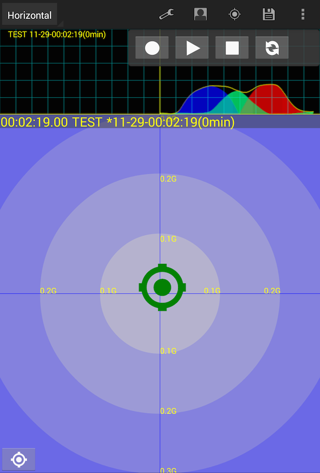

Accelerogram2について
概要
G（加速度）センサ値とGPS情報を記録するデータロガーです。
記録したGセンサ値とGPS情報を表示します。
カーソル表示
縦方向（加速/減速による）加速度、横方向（旋回による）加速度を組み合わせた中心位置を示すカーソルと過去5秒間のカーソルの移動軌跡を表示します。
グラフ表示
時間経過とGセンサ値の変化を横軸：時間、縦軸：Gセンサ値でグラフに表示します。
時間経過は右から左方向に流れ、その時の時間軸原点は記録時：グラフ右端、再生時：グラフ中央になります。
Gセンサ値は
- 青＝減速G
- 赤＝加速G
- 青緑＝左旋回G
- 黄緑＝右旋回G
を意味します。
横軸1メモリは1秒/縦軸1メモリは0.1Gです。
加速度センサ値とGPS情報の記録
加速度センサ値とGPS情報は50msec周期で記録/再生します。
画面
- 
-
上段：時間と加速度変化のグラフ
下段：縦方向加速度／横方向加速度を合成した中心位置
-
-
ファイル保存や読み出し、ユーザ名の編集等の操作を行うメニュー
- コメント入力、画面のズームモード、比較データ選択（表示ON/OFF）等の設定
- ユーザ名編集
- 地図表示ON/OFF
- ファイル保存、読み出し
- ヘルプ（この画面）を表示

-
動作を指示するボタンを配置したボックス
- 記録ボタン
- 再生（一時停止）ボタン
- 停止ボタン
- グラフモード切替ボタン
操作の概略
ユーザ選択（新規ユーザ追加）
- 画面上端のActionBarにあるユーザ選択アイコンをタップするとユーザ選択/入力ダイアログが起動します。
- 表示されているリストからユーザ名を選択、あるいは「NEW...」をタップして任意のユーザ名を入力します。
キャリブレーション
画面左下にあるカーソル・アイコンのボタンを長押しすると、加速度センサ値検出のキャリブレーションを行います。
記録
- 初期表示状態では画面左上にあるコマンダーボックスの記録ボタンをタップするとGセンサ値とGPS情報を記録する記録モードになります。
- 記録モード時、記録ボタンが「赤○」になります。
- 記録はAccelerogram2の画面になっている時にしか行いません。
ファイル保存
- 記録状態の時に停止ボタンをタップすると記録を停止します。この時にファイルに保存するかを確認するダイアログを表示します。
- ダイアログでYESを選択した場合、記録したGセンサ値とGPS情報をファイルへ保存します。
またNOを選択した場合、ファイルへの保存は行わずに内部にデータを保持した状態になります。
- 記録したデータを保持している時、再生及びファイルへの保存が可能です。
- ファイル保存をせずに、再度記録を開始すると現在保持しているデータを破棄します。
再生
- コマンダーボックスの再生ボタンをタップすると内部に保持したGセンサ値とGPS情報を画面に逐次表示する再生モードになります。
- 再生モード時、再生ボタンが「緑△」になります。
再生モードの時に再生ボタンをタップすると再生を一時停止します。
再度、再生ボタンをタップすると一時停止を解除します。
- 一時停止モード時、再生ボタンが「緑||」になります。
- 再生または一時停止モードの時、グラフ/カーソルを表示している領域をスワイプすると再生位置を変更します。
- 再生または一時停止モードの時、画面をダブルタップすると再生位置を10秒スキップします。
画面の右側をダブルタップ：＋10秒スキップ
画面の左側をダブルタップ：－10秒スキップ
比較データの表示
- ファイルに保存されているデータを比較データとしてグラフ表示を追加することが可能です。
- Settingsメニューにある「Select Compare-Data」をタップするとファイル選択ダイアログを表示します。
- 比較データを選択すると上下２段のグラフ表示となり、上段が比較データのグラフです。
- Settingsメニューにある「Toggle Compare-Data」をタップすると、比較データグラフの表示をON/OFFします。
- 再生または一時停止モードの時、グラフ／カーソルを表示している領域をスワイプまたはダブルタップして再生位置を変更すると比較データの再生位置も連動して変更します。
- 一時停止モードの時、比較データグラフ領域をスワイプまたはダブルタップすると、比較データの再生位置のみ変更します。
このときカーソル及び地図は、比較データの状態を表示します。
その他
- グラフ表示／カーソル表示はピンチズームIn/Outが可能です。
- ActionBar内の現在地アイコンをタップすると、地図の表示ON/OFFします。
- コマンダーボックスをドラッグすると、コマンダーボックスの表示位置を変更します。
- 地図ウインドウをドラッグすると、地図の表示位置を変更します。